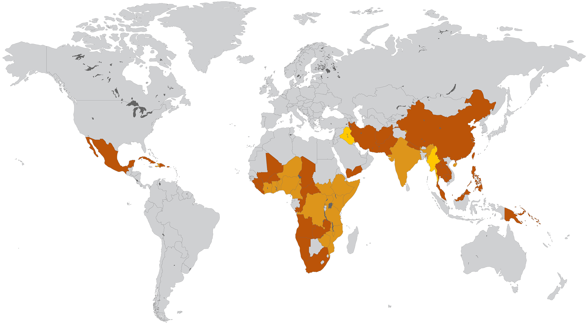

PROTECT TRAVELLERS AGAINST FOOD
AND WATER-BORNE DISEASES8–12
Countries reporting cholera, 2010-20159
Areas with cholera change rapidly
Countries or areas with moderate to high risk of cholera, typhoid fever and hepatitis A9–11
-
2010-2015
- Haiti
2010-2014
- Cuba
- Dominican Republic
- Mexico -
-
2010-2015
- Benin
- Cameroon
- Côte d’Ivoire
- Democratic
Republic
of Congo
- Ethiopia
- Ghana
- Kenya
- Malawi
- Mozambique
- Niger -
- Nigeria
- Somalia
- South Sudan
- Tanzania
- Togo
- Uganda 2010-2014 - Angola
- Burkina Faso
- Central
African
Republic -
- Chad
- Guinea
- Liberia
- Mali
- Namibia
- Republic of
the Congo
- Sierra Leone
- South Africa
- Zambia
- Zimbabwe
-
2010-2015
- Benin
-
-
2015
- Iraq
- Myanmar 2010–2015 - India -
2010-2014
- Afghanistan
- China
- Iran
- Nepal
- Pakistan
- Taiwan
- Yemen
-
2015
- Iraq
-
2010-2014
- Cambodia
- Laos
- Malaysia
- Papua New Guinea
- Philippines
- Soloman Islands
- Thailand


-
Countries reporting cholera, 2010–20159
Countries reporting CHOLERA (2010–2015), hepatitis A
and moderate to high risk of typhoid fever9–11 -
Countries reporting cholera, 20159
Countries reporting hepatitis A and
moderate to high risk of typhoid fever10,11 -
Countries reporting cholera, 2010–20149
Countries reporting moderate to high risk
of typhoid fever11
Areas with cholera change rapidly
- Cholera, like hepatitis A and typhoid, is a food and water-borne disease1
- Many parts of countries which are popular tourist destinations,
such as Africa, South and South East Asia are endemic for cholera7
Map adapted from World Health Organization and Crump JA et al.